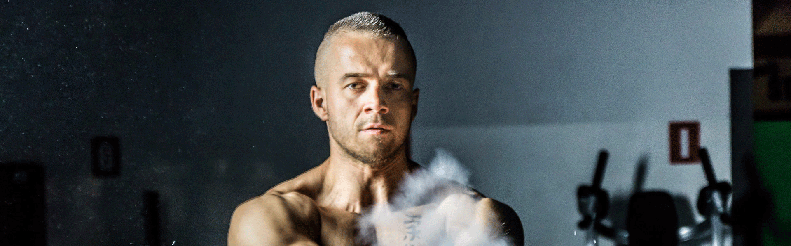
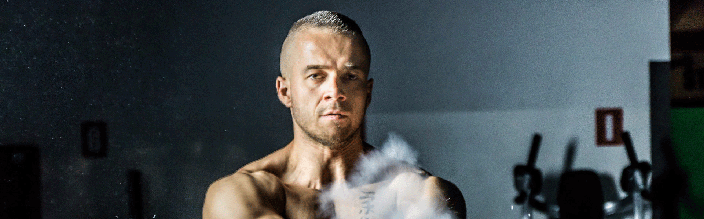

- 时速单骑(spinnig)：推荐指数★★★★★
- 它是目前欧美最流行的有氧健身项目之一，有人把这项运动称做“自行车上的舞蹈”，通过运动使车轮不停地旋转、还可自行调节运动负荷，运动量可大可小、易学、易练又动感十足，从而达到减少腰腹部的赘肉、健美下肢和提高心肺功能的效果，
☆不适合有关节病痛者，体能差的人群
- 健身球：推荐指数★★★★★
-
健身球最早在瑞士只作为康复医疗的设备。之后健身球又被传到澳大利亚、欧洲、美国等国家用来治疗腰背疾病、神经紊乱、膝盖和肩部康复医疗、纠正体态、提高病人的平衡等疾病。由于健身球在提高某些肌肉(腰背、骨盆)方面的作用，这项运动也被广泛推广。健身球现在不再仅作为一种理疗，它也成为新兴的健身运动。
☆适合人群：它适合所有需要康复治疗的人、它的健身效果良好，特别对脊柱和骨盆的锻炼；健身球有很好的损伤恢复和康复功能(对腰背疾病疗效显著)。在锻炼时比较安全，不容易出现损伤，还可以提高人(包括病人、受伤人)的柔韧、力量、平衡、姿态、心肺功能。

- 山西盈瑞科技有限公司 备案号：晋ICP备17006549号—3
- 联系电话：17634068219 0351—7891032
- QQ：3849009147 地址：山西省太原市盛世华庭四层